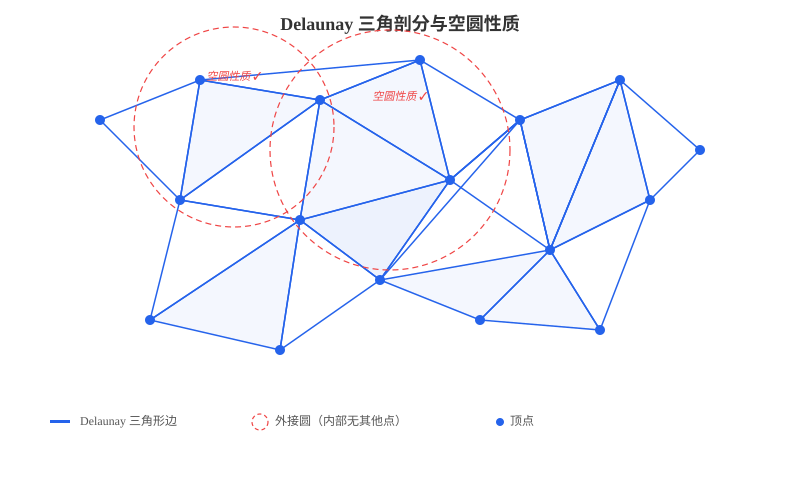
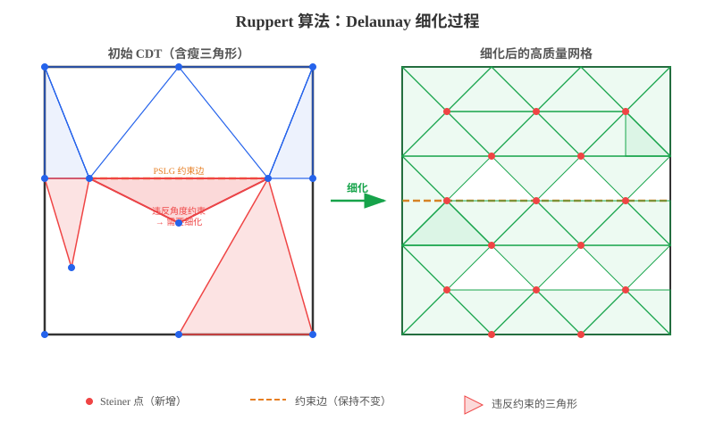
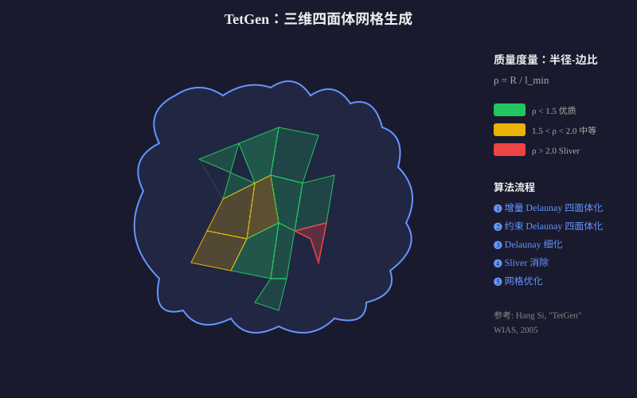
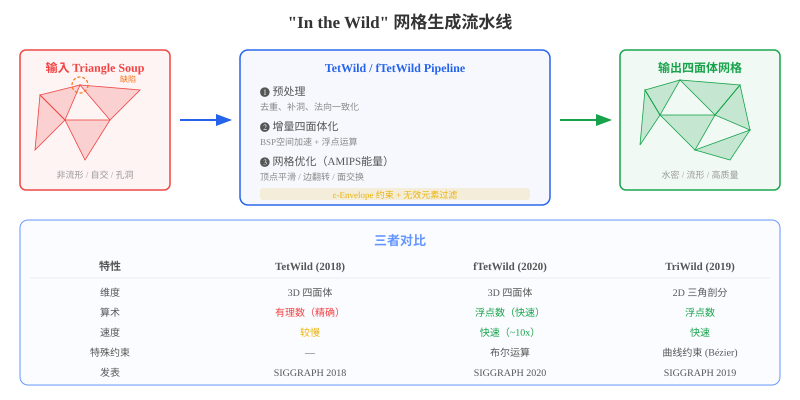
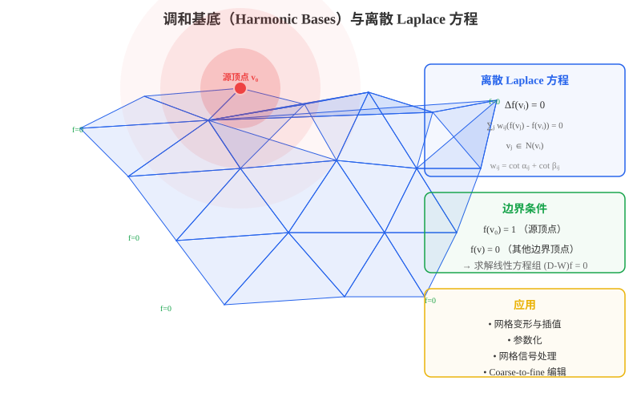
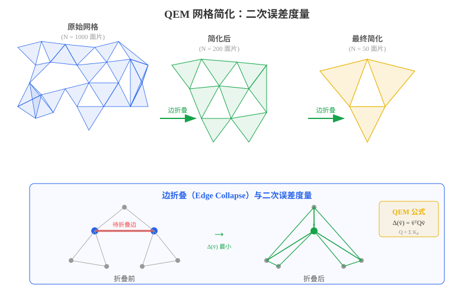
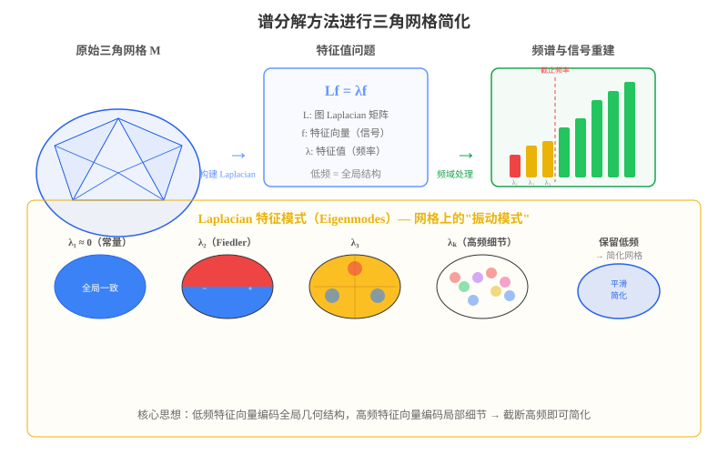

Delaunay 三角剖分是计算几何中最基础的三角网格生成方法之一。给定平面上的一个点集 $P = {p_1, p_2, \ldots, p_n}$，Delaunay 三角剖分满足以下核心性质：
空圆性质（Empty Circumcircle Property）：对三角剖分中的任何一个三角形，其外接圆内部不包含点集中的任何其他点。
数学上，如果三角形 $\triangle p_i p_j p_k$ 的外接圆为 $C$，则：
\[\forall\, p_l \in P \setminus \{p_i, p_j, p_k\},\quad p_l \notin \text{int}(C)\]
Delaunay 三角剖分的关键特性：
| 特性 | 说明 |
|---|---|
| 唯一性 | 一般位置（无四点共圆）下，Delaunay 三角剖分唯一 |
| 最大化最小角 | 在所有三角剖分中，Delaunay 三角剖分最大化最小内角（避免”扁平”三角形） |
| 对偶性 | Delaunay 三角剖分与 Voronoi 图互为对偶 |
| 局部最优性 | 任何不满足 Delaunay 性质的四边形可通过边翻转变（edge flip）为 Delaunay |
经典构造算法：
三维扩展：Delaunay 三角剖分在三维空间中自然扩展为四面体剖分（Tetrahedralization），同样满足空球性质——每个四面体的外接球内部不包含其他点。
Ruppert 算法（1995，Jim Ruppert）是二维质量网格生成领域的里程碑工作。它从一个初始的约束 Delaunay 三角剖分（CDT）出发，通过逐步插入 Steiner 点来改善网格质量。
核心思想：给定一个平面直线图（Planar Straight-Line Graph, PSLG） 和一个角度约束 $\theta_{\min}$，算法通过 Delaunay 细化生成满足所有约束的高质量三角网格。

算法流程：
输入: PSLG G, 最小角度约束 θ_min
输出: 质量三角网格 T
1. 计算 G 的约束 Delaunay 三角剖分 (CDT)
2. while 存在质量不满足要求的三角形 do:
a. 找到外接圆中包含其他点的"瘦"三角形（违反角度约束）
b. 或找到外接圆直径过大且包含边界段的"大"三角形
c. 在该三角形的外接圆圆心处插入 Steiner 点
d. 更新 Delaunay 三角剖分（通过边翻转）
3. return T
关键机制——保护圆（Encroachment）：
为了防止边界段被”吞掉”，算法引入了边界保护机制：
子段保护：如果一个三角形的外接圆圆心落在某个输入子段的”直径球”内，则不在该圆心插入点，而是在该子段的中点处分裂子段。
理论保证：
| 性质 | 说明 |
|---|---|
| 角度下界 | 所有三角形最小角 $\geq \min(20.7°, \theta_{\min})$ |
| 网格尺寸 | 生成顶点数 $O(n + m^2)$，其中 $n$ 为输入顶点数，$m$ 为输入子段数 |
| 终止性 | 算法必定终止（通过有界性证明） |
| 最优性 | 在最坏情况下网格规模接近最优 |
Shewchuk 的改进（2002）：
Jonathan Shewchuk 对 Ruppert 算法做了重要推广：
TetGen（Hang Si，2005）是三维四面体网格生成领域的标杆工具，由魏茨曼研究所（WIAS）开发。它将 Ruppert 的 Delaunay 细化思想扩展到三维空间，能够处理任意多面体域（Polyhedral Domain）。

核心算法——三维 Delaunay 细化：
三维情况比二维复杂得多，主要挑战包括：
TetGen 的算法框架：
TetGen 的质量保证：
\[\forall \text{ tetrahedron } T:\quad \frac{R}{l_{\min}} \leq \rho_0\]| 特性 | 说明 |
|---|---|
| 输入格式 | PLY, OFF, STL, NODE/ELE, PLC |
| 输出格式 | 四面体网格、Voronoi 图、凸包 |
| 网格质量 | 有界的半径-边比，无 Sliver（优化后） |
| 规模限制 | 可处理数百万量级的四面体 |
传统网格生成方法（如 TetGen）要求输入是”干净”的——水密、流形、无自交。然而在实际应用中，从三维扫描、CAD 导出、网络下载等渠道获取的网格往往是“野生”的（in the wild）：可能包含非流形边、自相交面片、孔洞、重复面片等各种缺陷。NYU 的 Daniele Panozzo 团队（Yixin Hu, Teseo Schneider 等）提出了一系列突破性的工作，实现了对任意输入网格的无条件鲁棒网格生成。

TetWild（Hu et al., SIGGRAPH 2018）是这一方向的奠基工作，其核心贡献在于：
给定任意三角面片集合（triangle soup），无需用户交互，自动生成分析就绪（analysis-ready）的高质量四面体网格。
核心设计——ε-Envelope（包络）：
TetWild 引入了特征包络（feature envelope） 的概念，这是其鲁棒性的关键：
\[\text{Envelope}_\epsilon(\partial \Omega) = \{ x \in \mathbb{R}^3 : d(x, \partial \Omega) \leq \epsilon \}\]其中 $\epsilon$ 是用户设定的容差参数。TetWild 保证：
算法流水线：
输入: Triangle Soup（任意三角面片集合）
输出: 高质量四面体网格
1. 预处理（Preprocessing）
- 去除重复面片和退化面片
- 一致化法向量
- 识别并修复自相交区域
2. 四面体化（Tetrahedralization）
- 使用有理数运算（exact arithmetic）确保鲁棒性
- 基于 BSP 树（Binary Space Partitioning）加速空间查询
- 增量插入输入三角形的边和面
3. 网格优化（Mesh Improvement）
- 使用 AMIPS 能量作为质量度量
- 顶点平滑（Smoothing）
- 边翻转（Edge Flip）和面交换（Face Swap）
- 边分裂（Edge Split）和边折叠（Edge Collapse）
- 过滤违反包络约束的无效元素
- 迭代直到所有四面体满足质量阈值
AMIPS 能量（Approximated Minimal Isotropic Sigmoidal Energy）：
TetWild 使用 AMIPS 能量作为四面体质量的统一度量。对于四面体 $T$，其 AMIPS 能量为：
\[E_{\text{AMIPS}}(T) = \frac{|T|^{2/3}}{3} \sum_{i=1}^{3} \sigma_i + \frac{3}{\sigma_i} - 4\]其中 $\sigma_i$ 是 Jacobi 矩阵的奇异值。AMIPS 能量的性质：
TetWild 的理论保证：
| 保证 | 说明 |
|---|---|
| 无条件终止 | 算法对任何输入都保证终止 |
| 水密输出 | 输出网格一定是封闭的、流形的 |
| 有界质量 | 所有四面体的 AMIPS 能量有上界 |
| 几何逼近 | 输出面与输入面的 Hausdorff 距离 $\leq \epsilon$ |
TetWild 的局限：
fTetWild（Hu, Schneider, Wang et al., SIGGRAPH 2020）是 TetWild 的加速版本，在保持鲁棒性的同时大幅提升了速度。
核心改进——用浮点运算替代有理数运算：
fTetWild 的关键洞察是：通过交错构建与优化的策略，可以在全程使用浮点运算的同时保持鲁棒性，无需代价高昂的有理数精确计算。
核心思想：不是先插入所有三角形再全局优化，而是每插入一个输入三角形后立即进行局部优化，始终保持一个合法的浮点四面体网格。
增量交错流水线：
不同于 TetWild 的 "先插入 → 后优化"：
TetWild: [插入全部三角形] → [全局优化]
fTetWild: [插入△₁] → [局部优化] → [插入△₂] → [局部优化] → ...
这个交错策略带来两个关键优势：
fTetWild vs TetWild 详细对比：
| 维度 | TetWild | fTetWild |
|---|---|---|
| 算术精度 | 有理数（精确但昂贵） | 浮点数（快速） |
| 速度 | 基准 | ~10x 加速 |
| 网格有效性 | 有理数坐标有效，浮点转换后可能无效 | 浮点坐标直接有效 |
| 输入面片保留 | 保证所有面片都被保留 | 实际中几乎全部保留（理论上不保证） |
| 新增功能 | — | 布尔运算（并/交/差）、背景尺寸场、开放边界平滑 |
| 质量保证 | AMIPS 能量有界 | 同样的质量保证 |
| 大规模数据集 | Thingi10K 测试通过 | Thingi10K 全部成功 |
布尔运算：
fTetWild 新增了对多个输入网格直接执行布尔运算的能力：
# 并集
./fTetWild -i mesh1.obj mesh2.obj -o union --op 0
# 交集
./fTetWild -i mesh1.obj mesh2.obj -o intersection --op 1
# 差集
./fTetWild -i mesh1.obj mesh2.obj -o difference --op 2
这使得 fTetWild 特别适合 CAD/CAE 工作流中的几何处理。
关键参数：
| 参数 | 含义 | 默认值 |
|---|---|---|
-l, --lr |
理想边长（= 包围盒对角线 × l） | 0.05 |
-e, --epsr |
包络厚度（= 包围盒对角线 × e） | 1e-3 |
--stop-energy |
AMIPS 能量停止阈值 | 10 |
--max-its |
最大优化迭代次数 | 80 |
--bg-mesh |
外部背景网格（局部尺寸控制） | — |
TriWild（Hu, Schneider, Gao et al., SIGGRAPH 2019）是 “In the Wild” 框架的二维版本，支持带有曲线约束的鲁棒三角剖分。
核心特性——曲线约束：
与传统的二维约束 Delaunay 三角剖分（只能处理直线段约束）不同，TriWild 能够直接处理参数曲线（如 Bézier 曲线）作为约束：
| 约束类型 | 输入格式 | 说明 |
|---|---|---|
| 线性约束 | .obj（线段集合） |
传统 PSLG |
| 曲线约束 | .json（Bézier 曲线） |
参数曲线作为约束边界 |
算法流程：
输入: 线段集合 + Bézier 曲线集合
输出: 满足约束的高质量三角网格
1. 曲线采样：将 Bézier 曲线离散为高密度线段
2. 构建 ε-Envelope：确保采样后的线段在包络内逼近原始曲线
3. 增量三角剖分：交错插入线段和局部优化
4. AMIPS 能量优化：保证三角形质量
5. 输出：线性网格或高阶网格（保留曲线信息）
特征包络与曲线逼近：
TriWild 使用相对特征包络参数 feature-envelope-r 控制曲线逼近精度：
其中 $\epsilon$ 由用户设定的相对容差决定：
feature-envelope-r = 1e-3feature-envelope-r = 2e-3输出模式：
TriWild 支持两种输出模式：
--output-linear-mesh）：将曲线约束近似为直线段的三角剖分TriWild 的意义：
TriWild 解决了二维约束三角剖分中长期存在的一个问题——如何鲁棒地处理曲线约束。传统方法需要先将曲线离散为大量小线段（可能导致网格过密或约束丢失），而 TriWild 通过包络机制在精度和效率之间取得了良好的平衡。
TetWild、fTetWild、TriWild 共同构成了 “Wild Meshing” 家族，其统一的核心理念是：
不再要求输入是”完美”的几何体，而是在算法内部自动处理所有输入缺陷，对用户完全透明。
统一的设计原则：
与其他方法的对比：
| 方法 | 输入要求 | 鲁棒性 | 速度 | 质量保证 |
|---|---|---|---|---|
| TetGen | 干净的水密网格 | ❌ 对缺陷输入可能失败 | 快 | 角度/半径-边比有界 |
| CGAL 3D Mesh | 干净的 PSLG | ❌ 需要预处理 | 中等 | Delaunay 质量保证 |
| TetWild | 任意 triangle soup | ✅ 无条件鲁棒 | 较慢（有理数） | AMIPS 有界 |
| fTetWild | 任意 triangle soup | ✅ 无条件鲁棒 | ✅ 快（浮点） | AMIPS 有界 |
| TriWild | 线段 + 曲线 | ✅ 无条件鲁棒 | 快 | AMIPS 有界 |
参考文献：
调和基底是三角网格处理中的重要工具，广泛应用于网格变形、参数化和信号处理。

调和函数的定义：在离散三角网格上，一个顶点函数 $f: V \to \mathbb{R}$ 是调和的，当且仅当它在每个内部顶点处满足离散 Laplace 方程：
\[\Delta f(v_i) = \sum_{v_j \in N(v_i)} w_{ij}(f(v_j) - f(v_i)) = 0, \quad \forall\, v_i \in V_{\text{interior}}\]其中 $w_{ij}$ 是边 $(v_i, v_j)$ 上的权重（常用余切权重（cotangent weights））：
\[w_{ij} = \frac{1}{2}(\cot \alpha_{ij} + \cot \beta_{ij})\]$\alpha_{ij}$ 和 $\beta_{ij}$ 分别是边 $(v_i, v_j)$ 所在两个三角形中对边的两个角。
调和基底的构造：
给定网格 $M$ 的顶点集 $V = V_B \cup V_I$（$V_B$ 为边界顶点，$V_I$ 为内部顶点），调和基底的构造等价于求解线性方程组。将 Laplacian 矩阵分块：
\[\mathbf{L} = \begin{pmatrix} \mathbf{L}_{BB} & \mathbf{L}_{BI} \\ \mathbf{L}_{IB} & \mathbf{L}_{II} \end{pmatrix}\]对每个边界顶点 $v_k \in V_B$，定义调和基底 $\phi_k$ 满足：
| 解出内部顶点的值后，即得到一组调和基函数 ${\phi_1, \phi_2, \ldots, \phi_{ | V_B | }}$。 |
调和基底的应用：
QEM（Quadric Error Metrics） 是 Garland 和 Heckbert（1997）提出的经典网格简化方法，通过边折叠（Edge Collapse） 迭代简化网格，每次折叠选择引入误差最小的边。

核心思想——二次误差度量：
对网格上的每个顶点 $v = [v_x, v_y, v_z, 1]^T$，定义其二次误差为到其所有相邻平面距离的平方和。
给定一个平面 $ax + by + cz + d = 0$（满足 $a^2 + b^2 + c^2 = 1$），点 $v$ 到该平面的距离平方为：
\[D^2(v, \mathbf{p}) = (\mathbf{p}^T v)^2\]其中 $\mathbf{p} = [a, b, c, d]^T$。用齐次坐标表示为二次型：
\[D^2(v, \mathbf{p}) = v^T \mathbf{K}_p v\]其中 $\mathbf{K}_p = \mathbf{p} \mathbf{p}^T$ 是一个 $4 \times 4$ 的对称矩阵（称为基本二次型）。
顶点的累积二次误差：
\[\mathbf{Q}(v) = \sum_{\mathbf{p} \in \text{planes}(v)} \mathbf{K}_p\]边折叠的代价：
当折叠边 $(v_1, v_2)$ 到新顶点 $\bar{v}$ 时，误差为：
\[\Delta(\bar{v}) = \bar{v}^T (\mathbf{Q}_1 + \mathbf{Q}_2) \bar{v}\]最优新顶点位置 $\bar{v}^*$ 通过解以下方程获得：
\[\frac{\partial \Delta}{\partial \bar{v}} = 2(\mathbf{Q}_1 + \mathbf{Q}_2) \bar{v} = 0\]即求合并后矩阵的零空间。实践中常使用矩阵的伪逆。
算法流程：
1. 对所有顶点计算初始 Q
2. 对所有边 (v1, v2) 计算折叠代价 Δ = v̄ᵀ(Q1+Q2)v̄
3. 将所有边按代价从小到大放入优先队列
4. while 优先队列非空 and 需要继续简化:
a. 取出代价最小的边
b. 折叠该边，更新相邻边的代价
c. 重新插入优先队列
5. return 简化后的网格
QEM 的优势：
将三角网格视为定义在图上的信号，利用图信号处理（Graph Signal Processing） 和谱图理论（Spectral Graph Theory） 的方法进行简化，是近年来网格处理的重要方向。

从网格到图信号：
给定三角网格 $M = (V, E, F)$，构造其图 Laplacian 矩阵 $\mathbf{L}$：
\[\mathbf{L} = \mathbf{D} - \mathbf{W}\]其中 $\mathbf{D}$ 是度矩阵，$\mathbf{W}$ 是邻接权重矩阵。常用余切 Laplacian：
\[L_{ij} = \begin{cases} -\frac{1}{2}(\cot \alpha_{ij} + \cot \beta_{ij}) & \text{if } (i,j) \in E \\ \sum_{k \in N(i)} \frac{1}{2}(\cot \alpha_{ik} + \cot \beta_{ik}) & \text{if } i = j \\ 0 & \text{otherwise} \end{cases}\]特征值分解：
对 Laplacian 矩阵进行特征值分解：
\[\mathbf{L} \mathbf{f}_k = \lambda_k \mathbf{f}_k, \quad k = 1, 2, \ldots, |V|\]| 其中 $0 = \lambda_1 \leq \lambda_2 \leq \cdots \leq \lambda_{ | V | }$。 |
特征值的几何含义：
| 特征值 | 含义 | 对应的网格特征 | ||
|---|---|---|---|---|
| $\lambda_1 = 0$ | 常量信号 | 平移（无几何意义） | ||
| $\lambda_2$ | Fiedler 值 | 网格的”刚度”，大尺度形状变化 | ||
| $\lambda_3 \sim \lambda_k$ | 中低频 | 全局弯曲、扭转等宏观几何特征 | ||
| $\lambda_k \sim \lambda_{ | V | }$ | 高频 | 局部细节、噪声、微小凹凸 |
这类似于傅里叶分析——低频分量对应平滑的全局结构，高频分量对应局部细节和噪声。
谱简化方法：
核心思想：保留低频特征向量（编码全局几何结构），丢弃高频特征向量（编码局部细节），从而实现网格简化。
具体步骤：
谱方法的变体：
谱方法的优势与局限：
| 优势 | 局限 |
|---|---|
| 理论优美，有坚实的数学基础 | 特征值分解计算量大（$O(n^3)$） |
| 能自动区分全局结构和局部细节 | 需要全局计算，不支持增量式处理 |
| 多尺度分析能力强 | 对非均匀网格效果可能不理想 |
| 可与压缩、去噪等操作统一处理 | 大规模网格（>100K 顶点）需要近似方法 |
大规模网格的加速方法：
对于大规模网格，直接进行完整的特征值分解代价过高，常用近似方法包括：